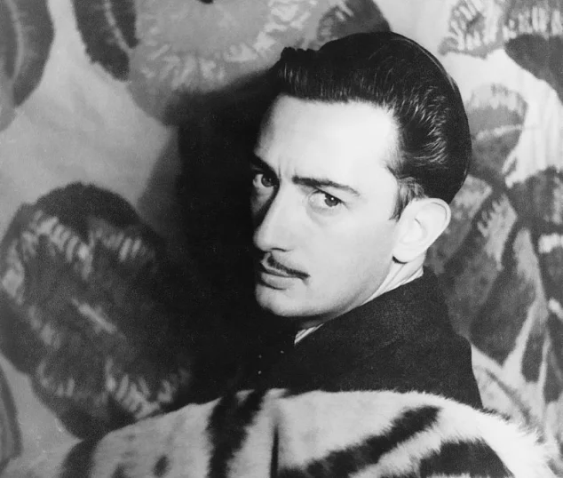
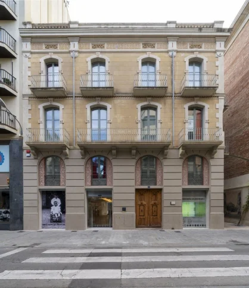
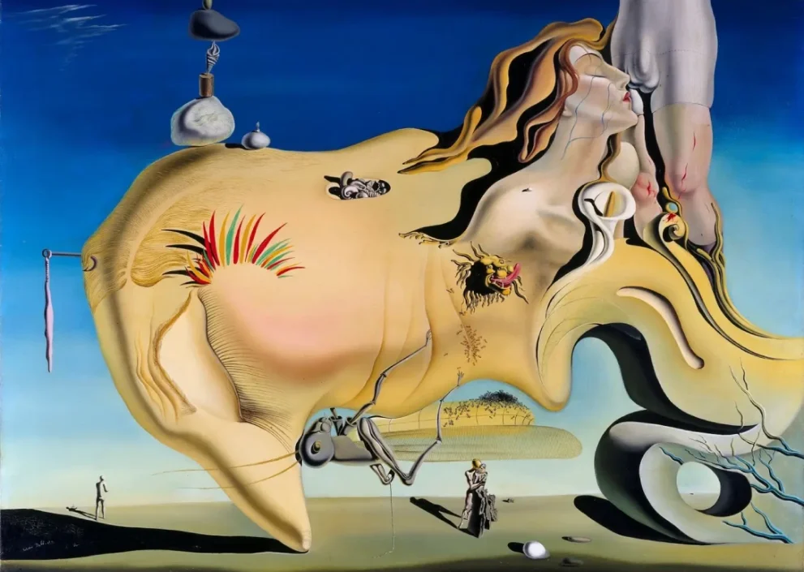
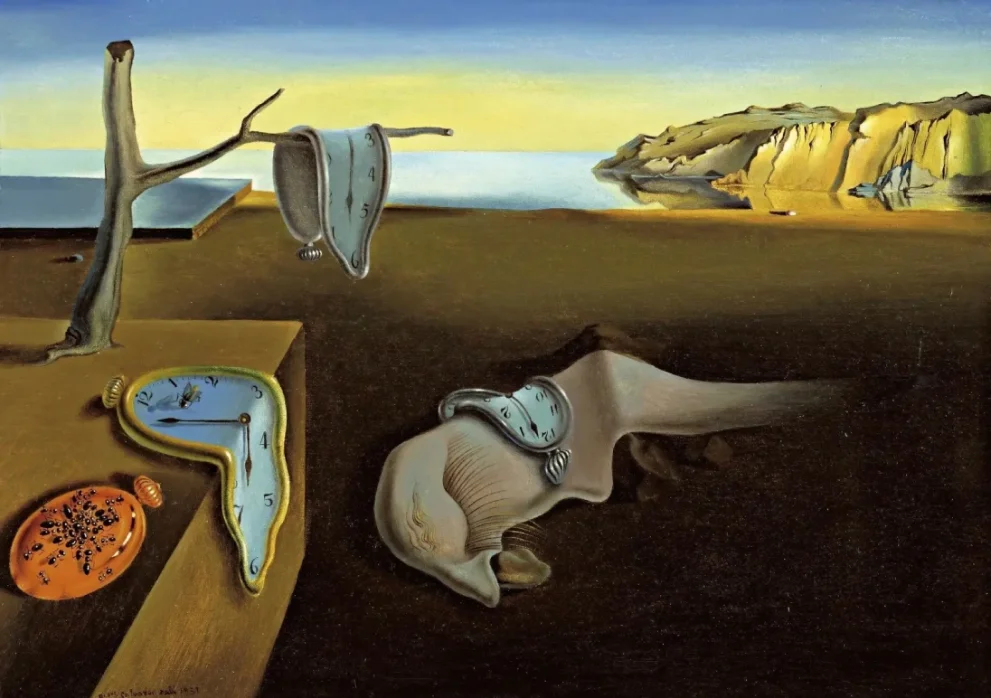
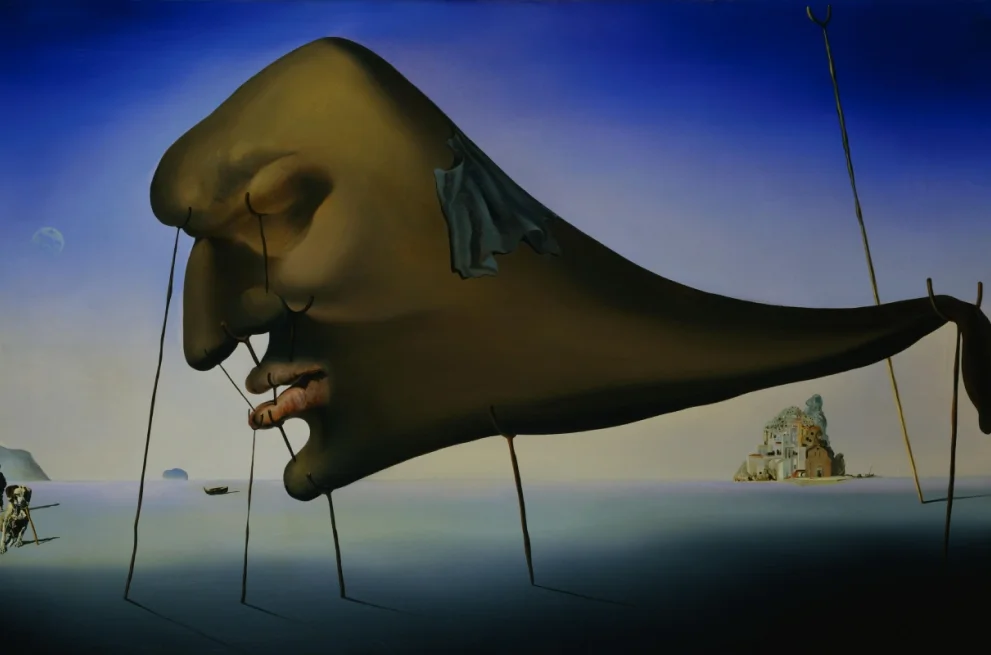

Salvador Felip Jacint Dalí i Domènech
was a Spanish surrealist artist renowned for his technical skill, precise draftsmanship, and the striking and bizarre images in his work.
About
Born in Figueres in Catalonia, Dalí received his formal education in fine arts in Madrid. Influenced by Impressionism and the Renaissance masters from a young age, he became increasingly attracted to Cubism and avant-garde movements. He moved closer to Surrealism in the late 1920s and joined the Surrealist group in 1929, soon becoming one of its leading exponents. His best-known work, The Persistence of Memory, was completed in August 1931. Dalí lived in France throughout the Spanish Civil War (1936 to 1939) before leaving for the United States in 1940 where he achieved commercial success. He returned to Spain in 1948 where he announced his return to the Catholic faith and developed his "nuclear mysticism" style, based on his interest in classicism, mysticism, and recent scientific developments.
Dalí's artistic repertoire included painting, sculpture, film, graphic arts, animation, fashion, and photography, at times in collaboration with other artists. He also wrote fiction, poetry, autobiography, essays, and criticism. Major themes in his work include dreams, the subconscious, sexuality, religion, science and his closest personal relationships. To the dismay of those who held his work in high regard, and to the irritation of his critics, his eccentric and ostentatious public behavior often drew more attention than his artwork. His public support for the Francoist regime, his commercial activities and the quality and authenticity of some of his late works have also been controversial. His life and work were an important influence on other Surrealists, pop art, popular culture, and contemporary artists such as Jeff Koons and Damien Hirst.
History
Salvador Dalí was born on 11 May 1904, at 8:45 am, on the first floor of Carrer Monturiol, 20 in the town of Figueres, in the Empordà region, close to the French border in Catalonia, Spain.
Portfolio
Face of the Great Masturbator
The Persistence of Memory
Sleep